Tutorials
In this section, different code snippets are provided to illustrate how to use some of the main features of raman, including data loading, preprocessing and analysis, and visualisation.
Data containers
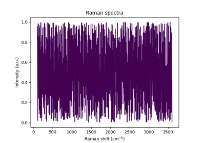
Storing generic data
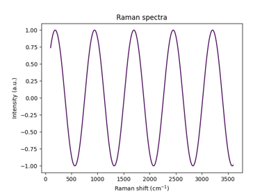
Storing spectra
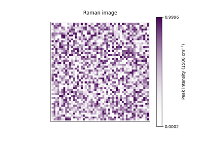
Storing imaging data
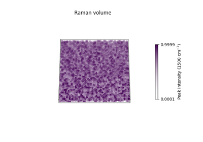
Storing volumetric data
Data loading


Datasets and metrics

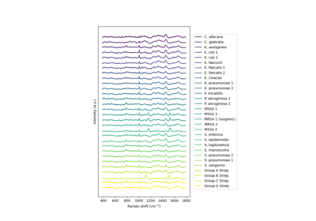
Loading the Bacteria dataset
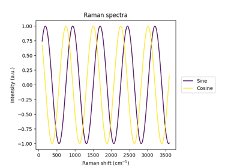
Using built-in metrics
Data visualisation
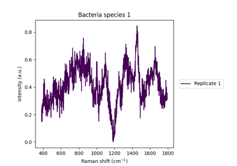
Visualising spectra
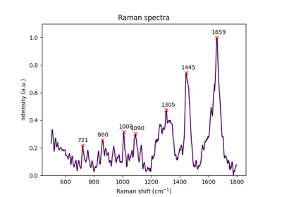
Visualising peaks

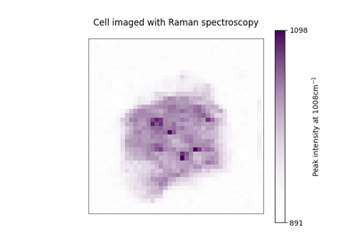
Visualising imaging data
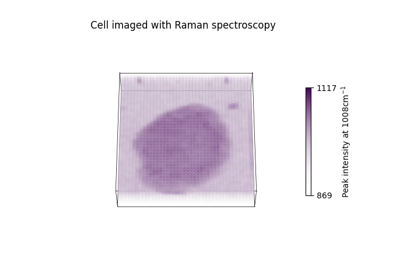
Visualising volumetric data
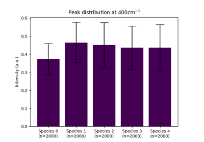
Visualising peak distributions
Visualising peak distributions

Preprocessing

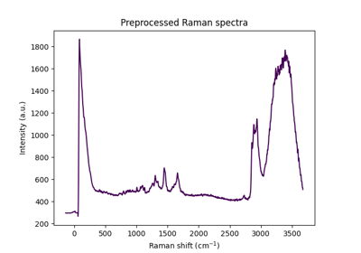
Custom methods

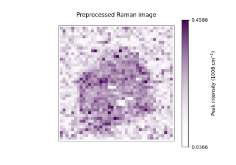
Built-in protocols
Analysis
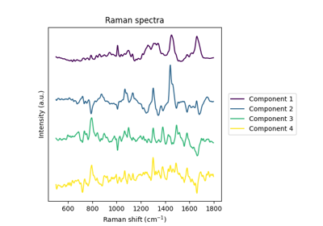
Built-in decomposition methods
Built-in decomposition methods

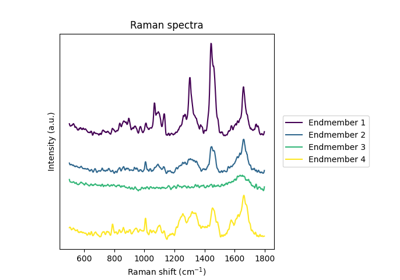
Built-in unmixing methods
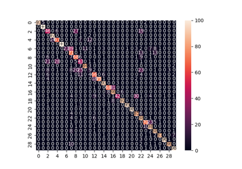
Integrative analysis: Support Vector Machine (SVM) classification
Integrative analysis: Support Vector Machine (SVM) classification
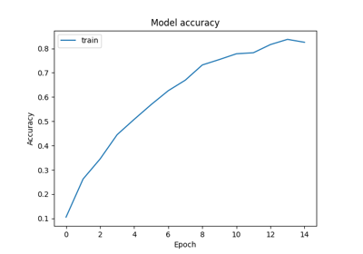
Integrative analysis: Neural Network (NN) classification
Integrative analysis: Neural Network (NN) classification